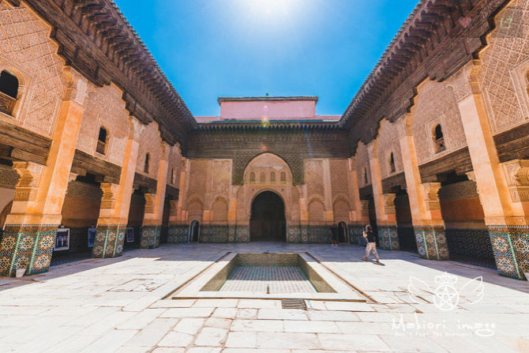

摩洛哥周年纪~许我一个最真实的一千零
摩洛哥，这个之前难签程度不亚于南美国家的国度，一言不合就免签了…… 让所有人都意想不到。据摩洛哥当局预计，中国游客的入境数量从往年的500人猛增至15000-20000人， 而且不久后将会开辟北京-卡萨布兰卡的直航。因此，可以预计摩洛哥会成为国人新宠，但是问题来了！！！ 去过摩洛哥的人，回来后评价两极分化明显！对摩洛哥印象不错的大有人在，对摩洛哥撕逼的人也不少，
这真的是一个神奇的国度。虽然，我属于前者是因为我们这次旅行的还算顺利，老司机的我们几个本来就经验丰富， 而对于撕逼摩洛哥的人大都是遇到了一些不好的人而发生了一些事，而直接影响到对整个国家的评价。 所以，我想说的是，不管是好评还是差评，只有你自己去了，才能感受到一个真实的摩洛哥，而且是独一无二的。 旅行是很主观的东西，我能呈现的是我遇到的而产生的主观看法，每个人的承受能力和认知度不同， 即使经历相同的事情，看法也许还会不一样。

亮点行程：
- 卡萨布兰卡（白城）：这城市太有名了《北非谍影》的背景故事城市，看点就是那个巨无霸的哈桑二世清真寺和朝圣瑞克的咖啡馆。
- 马拉喀什（红城）：这个让我震撼的城市，第一次让我看到阿拉伯世界的真实状况，看点就是阿里·本·优素福神学院，马约尔花园，杰马夫那广场以及麦地那老城。
- 撒哈拉沙漠三天两晚：我个人非常喜欢且觉得超值的行程，路上会经过阿伊特·本·哈杜村这个著名的取景地，还有就是连我都为之赞叹的撒哈拉沙漠的景色
- 撒哈拉沙漠三天两晚：我个人非常喜欢且觉得超值的行程，路上会经过阿伊特·本·哈杜村这个著名的取景地，还有就是连我都为之赞叹的撒哈拉沙漠的景色
- 菲斯：出了名的大染坊和错综复杂的老城
- 舍夫沙万（蓝城）：世界三大蓝城之一，是本次旅行中出片率最高的地方，非常的喜欢
- 丹吉尔：个人觉得没啥意思，靠近欧洲，虽然繁华但是就是没感觉
- 艾西拉：本次的意外之喜，小镇虽小但是安静清新，天气好很赞！
城际大巴：
- 卡萨布兰卡机场-卡萨布兰卡市里：43一人
- 卡萨布兰卡-马拉喀什：火车票一等座105一人
- 梅尔祖卡-菲斯包车：1300一车
- 菲斯-舍夫沙万：CTM大巴 75一人
- 舍夫沙万-丹吉尔：大巴55一人
- Hello World 我是梅行哈
- 前端开发工程师
- 前端开发工程师是Web前端开发工程师的简称，是近五年才真正开始受到重视的一个新兴职业。
- 前端开发
- Web前端开发是从网页制作演变而来的，名称上有很明显的时代特征。